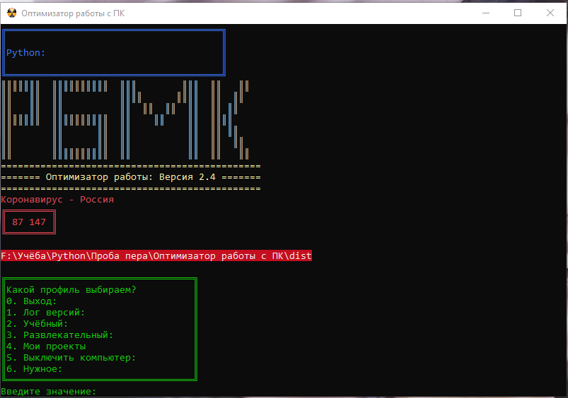

==== Версия 0.1 beta ========
=========================
Построение программы, создание основных функций: Лог версий: Учебный: Рабочий: Развлекательный.
=========================
==== Версия 0.2 beta ========
=========================
Доработка раздела "Рабочий".
=========================
==== Версия 0.3 beta ========
=========================
Теперь можно не перезапускать каждый раз программу, чтобы обратиться к другой части меню.
Главное меню доступно из любого пункта. Программа сама себя перезапускает :)
=========================
==== Версия 0.4 beta ========
=========================
Добавление пункта "Выход", изменение списка меню.
31.07.2019
=========================
==== Версия 0.5 beta ========
=========================
Исправление мелких ошибок кода.
=========================
==== Версия 0.6 beta ========
=========================
Доработка пункта меню, "Учебный", исправление ошибок.
=========================
==== Версия 0.7 beta ========
=========================
Добавление подпунктов в меню "Учебный - Обратно в меню - Python - SQL".
=========================
==== Версия 0.8 beta ========
=========================
Добавление 5-го пункта меню "Голосовое управление: 0.1 BETA".
=========================
==== Версия 0.9 beta ========
=========================
Изменения в дизайне приложения, добавление цвета и рисунков.
=========================================
==== Оптимизатор работы: Версия 0.9.5: beta ====
=========================================
Добавил возможность работать с файлами конфигураций. Теперь необязательно
изменять код программы, чтобы добавлять или убирать ссылки на необходимые ресурсы.
=========================
======== Версия 1 =========
=========================
Вышли из BETA версии, реализованы все запланированные функции.
1) Открытие необходимых программ и файлов одним кликом.
2) Работа с конфигурационными файлами,
чтобы каждый раз не перекомпилировать программу.
=========================
======= Версия 1.1 =========
=========================
1) Улучшена поддержка конфигурационных файлов, добавлены функции os.chdir и os.getcwd,
что в свою очередь позволяет создавать относительные ссылки для файлов list%.bat в папке mod,
что уже в свою очередь даст возможность работать программе на любом ПК из любой дирректории.
Чудеса да и только!
2) Также была реализована хитрая функция относительных дирректорий для 'Голосового управления'.
Так как, эта программа является другим exe файлом, она сама по себе лежит в другой папке, и из под неё, в
отличии от файлов mod не так просто вернуться в основное меню программы(на одну папку выше, ниже проще).
Так вот, с помощью 'x = os.getcwd()' создаём переменную с полным путём текущего каталога(который нам и нужен).
Далее мы переходим в нужную папку где лежит голосовой ассистент с помощью 'os.chdir(r'mod\Voice Assistant\dist'
и записываем значение 'x'(нужной нам папки с exe файлом Оптимизатора работы) с помощью такой команды:
***************************
*f = open('conf.txt', 'w *
*f.write(x) *
*f.close()*
***************************
Выходит так, что с exe файлом лежит conf.txt, в котором записан путь до оптимизатора работы.
И чтобы вернуться в прежднее меню, мы говорим необходимую голосовую команду, а Пятница выполняет следующий код:
*********************************
*opened = open(r"conf.txt", "r *
*text = opened.read() *
*os.chdir(text) *
*os.startfile('Untitled-1.exe *
*sys.exit() *
*********************************
То есть, она открывает conf.txt в своём корневом каталоге Voice Assistant\dist и читает его,
из него берёт путь до exe с основным меню.
Таким образом, программа будет работать на любом локальном диске и каталоге.
Главное не нарушать внутреннюю структуру файлов. Но это и так понятно.
Данные в conf.txt каждый раз при запуске Пятницы полностью перезаписываются, если файла нет,
система создаёт его.
3) Создал 6-й пункт меню - Отчистка ПК, который использует файл mod\list6.bat,
он как вы поняли удаляет лишний мусор с ПК по типу Ccleaner.
4) Создал 7-й пункт меню для быстрой проверки нового кода.
Так как каждый раз новый файл создавать лень, то лучше буду тестировать его прямо здесь.
=========================
======= Версия 1.2 =========
=========================
Пункты 2.1, 2.2, 3, 4 и 6 теперь полностью работают на файлах конфигурации.
Сами файлы лежат в папке mod и несут название list%.bat.
Где номер цифры соответствует номеру меню программы оптимизатора.
Сделано это для того, чтобы каждый раз при добавлении новой ссылки не перекомпилировать программу.
=========================
======= Версия 1.3 =========
=========================
Добавил раздел в "Учебный - 3: HTML".
=========================
======= Версия 1.4 =========
=========================
Раздел лог версий переведён на работу с файлом конфигурации.
Теперь каждый может вести свой лог версий.
Сам лог расположенн в папке mod, и несёт название log.txt, в кодировке win1251.
=========================
======= Версия 1.5 =========
=========================
Добавлен тестовый раздел: 7. Парсер Авито BETA 0.1:
Также использована функция:
**********************************
*for file in glob.glob("*.exe"): *
*os.startfile(file) *
**********************************
Что в свою очередь позволяет перезапускать или запускать из других ПО
(при условии, что они будут иметь эту фичу) exe основной программы независимо от её имени.
Главное, чтобы в папке с ПО не было второго exe.
=========================
======= Версия 1.6 =========
=========================
Добавил пункт "8. Выключить компьютер",
также добавил в начало меню программы список дел на каждый день: "Модуль напоминаний".
В зависимости от того, какой сегодня день, программа будет выводить список дел на сегодня.
=========================
======= Версия 1.7 =========
=========================
Добавил пунт - "9.Заметки".
=========================
======= Версия 1.8 =========
=========================
Оптимизация программы, создание функций, для сокращения объёма кода.
=========================
======= Версия 1.9 =========
=========================
Добавил Пункт "10. Компиляция". При активации этого пункта, программа запукает bat,
который закрывает программу, компилирует и запускает заново новый exe.
=========================
======= Версия 2.0 =========
=========================
Теперь программа запускается(перезапускается) в сторого заданной позиции монитора.
Сделано через настройки ярлыка.

=========================
======= Версия 2.1 =========
=========================
Теперь программе не нужен перезапуск, можно ходить по меню без перезагрузки ПО.
=========================
======= Версия 2.1 =========
=========================
Перенёс "Лог Версий" и Загловок программы в исходный код.
=========================
======= Версия 2.2 =========
=========================
Перенёс все файлы mod на py файлы, от bat файлов было рнешено отказаться.
Сократил количество строк меню
=========================
======= Версия 2.3 =========
=========================
Сократил несколько пунктов меню, оставив самые нужные.
Добавил команду 'os.system(cls), которая очищает экран консоли после выполнения команд. КРАСОТИЩА!'
=========================
======= Версия 2.4 =========
=========================
Внесены изменения в дизайн программы,
сделан упор на дизайн и цветовую палитру программ в стиле 90-х годов.
Добавлен пункт на главное окно 'Коронавирус - Россия'.
Там посредством парсера показывается онлайн статистика числа заболевших.
Логи теперь пишутся в HTML файл.

24.04.2020
==========================
======= Версия 2.4.1 =========
==========================
Пофиксил баг, при котором Напоминание за среду было бесцветным.
Скриншот приложил на память.
29.04.2020
==========================
======= Версия 2.4.2 =========
==========================
Добавил скрытую функцию самокомпиляции программы.
Вызывается набором символа '+'.
Плюс, добавил набор программ "AutoSettings" в "Мои проекты"
30.04.2020
==========================
======= Версия 2.4.3 =========
==========================
Исправил баг с отображением статистики Коронавируса.
Надеюсь, не придётся ещё раз его править.
30.04.2020
==========================
======= Версия 2.4.4 =========
==========================
Разобрался в наборе bat файлов и программ из 'AutoSettings'
Несколько из них вынес в Меню. 4: Мои проекты
01.05.2020
==========================
======= Версия 2.4.5 =========
==========================
Расширил пункт №6, необходимыми каталогами в работе.
17.05.2020
=========================
======= Версия 2.5 =========
=========================
Глобальное обновление, теперь программа может работать
без подключения к интернету.
При отсуствии интернета, выводится соответствующее оповещение.
17.05.2020
=========================